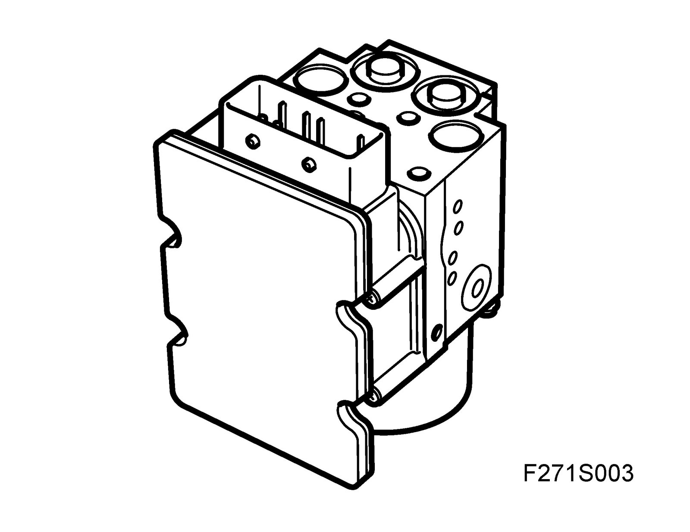
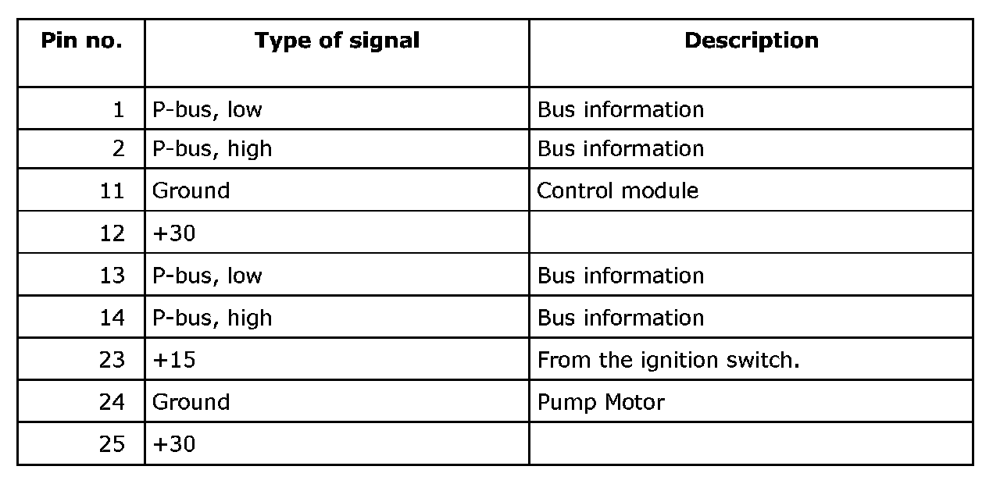
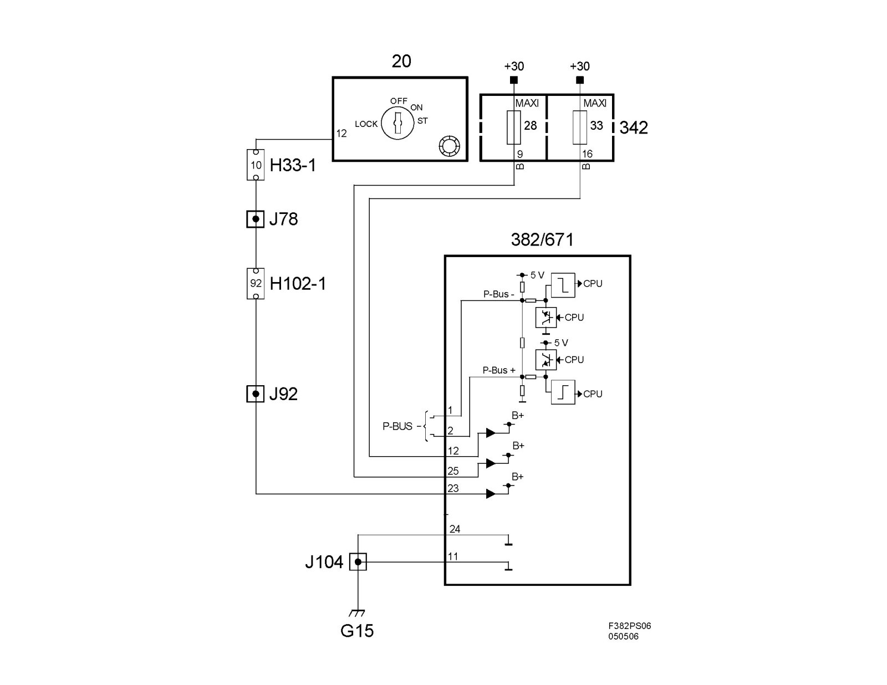
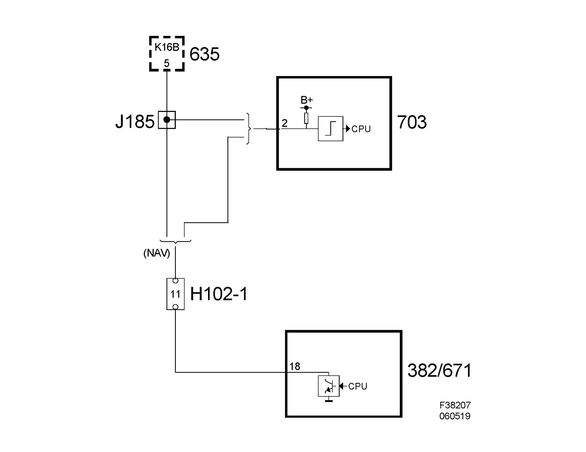

Control Module, TCS (382) Including Hydraulic Unit
Control module, TCS (382) including hydraulic unitLocation
TCS control module (382)

Main use
The control module continually calculates wheel speed for all four wheels and regulates with braking or an engine torque limitation request if there is a difference between wheel speeds and a limit value is exceeded.
The hydraulic unit provides brake pressure to the wheel brakes and holds or evacuates brake fluid as necessary using internal unit valves.
Type
The control module contains
A main processor which regulates ABS function and a large portion of diagnostics monitoring.
A slave processor, which handles parts of the diagnostics monitoring, continually checks the main processor and compares the main processor's calculation of wheel speed.
Field Effect Transistors (FET) which engage the pump motor and the valves (on and off).
A relay which works like a safety switch and cuts the voltage to the valves if a larger system fault is detected.
Valve block
The valve block is part of the hydraulic unit. It regulates brake pressure to the wheels when braking with ABS control and during TCS control with braking. The valve block contains 8 electromagnetic valves: four inlet valves and four outlet valves, thus there is one inlet and one outlet valve per wheel.
In rest position, the inlet valve is open and the outlet valve closed.
In the valve block is an accumulator chamber and a pressure chamber for each brake circuit. The accumulator chamber is located between the outlet valve and the pump and is used to accumulate brake fluid before the pump starts.
The pressure chamber is located between the pump and the inlet valve and is used to dampen noise and pressure surges when the pump is operating.
Power supply, ground and bus communication

Wiring diagram
^ Power supply +30, +15 and ground

^ Speed signal
